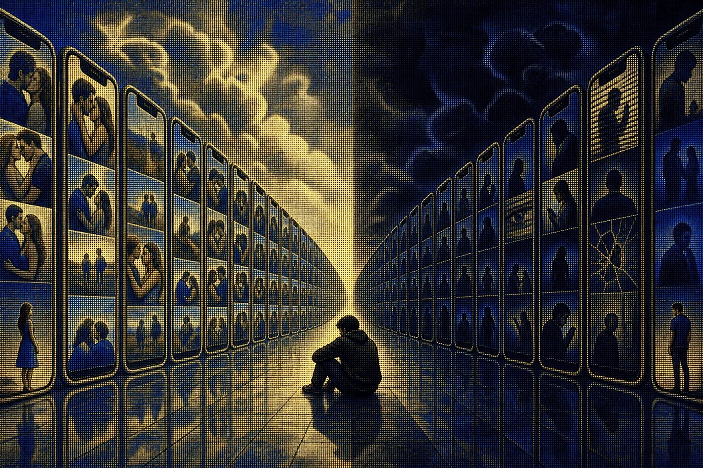

How Instagram’s Algorithm Broke My Relationship

I was scrolling through Instagram one day and noticed something strange.
When I felt happy, Instagram seemed to meet me there. I saw relationship reels, romantic videos, cute couples, and people talking about love. When I was in a bad mood, the feed changed. Suddenly it was cheating, toxic relationships, manipulation, red flags, breakups, and all the reasons someone might secretly be unhappy with their partner.
At first, I did not think much about it. It was just Instagram. But then I started thinking about how quickly the system seemed to understand what was happening inside my head.
That left me with a harder question: what happens when the same thing happens to someone who is already questioning their relationship? What if the algorithm does not know the truth about your relationship? What if it only knows what keeps you watching?
The algorithm learns what you react to
Instagram does not need to understand your entire life. It does not need to know whether your relationship is healthy or unhealthy. It needs signals.
- What did you watch?
- What did you like or share?
- Where did you stop scrolling?
- What did you watch again?
Meta describes its ranking systems as making many predictions about what content a person may find valuable. A share can be one signal; behavior and user feedback provide others. No individual prediction is perfect, so the system combines many of them.
Now imagine someone watches one video about relationship manipulation, then another, then another. Maybe they do not believe those videos at first. The system sees something simpler: you seem interested in this.
So it provides more. Eventually, a person can inhabit a completely different information environment from the one in which they began.
Your feed can start looking like your mindset
If you are happy, you may see content that makes you feel even happier. If you are interested in fitness, you will probably see more fitness content. If you are interested in cybersecurity, you will see cybersecurity content.
And if you are worried about your relationship, you may start seeing relationship warnings everywhere:
- Signs your partner is losing interest.
- Behaviors you should never ignore.
- Reasons someone may be hiding something.
- Proof that you are settling for less.
Some of this content may be useful. The problem is not necessarily one video. It is repetition. When you hear the same idea hundreds of times, it can begin to feel less like an opinion and more like reality.
Where my relationship enters the story
I am not saying Instagram was entirely responsible for my breakup, and I do not blame her for everything. That is what makes the story complicated.
Imagine constantly seeing an unrealistic version of what a partner should be: the person who always knows what to say, remembers everything, constantly posts about the relationship, never makes mistakes, and gives their partner exactly what they want.
After enough of this, a real relationship can start being compared with an imaginary one. The real relationship will almost always lose.
Real people have bad days. They misunderstand each other. They forget things. Sometimes they communicate badly. They do not behave like a romantic reel because a reel is not a relationship—it is one selected moment from one angle, edited into something worth watching.
The algorithm does not have to lie
This may be the most important point.
Instagram can show you something technically true but completely out of context. Someone really did cheat. Someone really was manipulated. Someone’s relationship really was toxic. Someone really did ignore warning signs.
None of that means the same thing is happening in your relationship. Yet after seeing hundreds of similar stories, your mind begins making connections:
He also does that.
Maybe this is a sign.
Maybe I have been ignoring the red flags.
Something that would have seemed ordinary yesterday becomes evidence today.
Suspicion can become surveillance
This pattern is not something I invented after my relationship ended. Researchers have studied how social platforms can make romantic monitoring easier and more habitual.
In a 2011 study, Robert Tokunaga examined what he called interpersonal electronic surveillance: using social-networking sites to monitor a romantic partner. Surveillance was associated with factors including time spent on a partner’s profile and how deeply social networking had become integrated into daily routines.
Social media does not merely give us information about a partner. It gives us an always-available way to check them. Checking can become a cycle:
A 2009 study by Amy Muise, Emily Christofides, and Serge Desmarais described a similar feedback loop: Facebook exposed people to ambiguous partner information that could provoke jealousy and encourage further use of the platform.
At that point, Instagram is no longer only entertainment. It has become an investigation tool.
The dangerous part is confirmation
Once someone starts believing something about a partner, they may notice only the things that support that belief.
Suppose the belief is: my partner does not love me as much as before. Then a reel says, “If your partner really loved you, they would always make time.” Another says, “If they wanted to, they would.” Another says, “Stop making excuses for someone who does not appreciate you.”
The feed now appears to explain the relationship. But the system does not know the arguments, the good days, the private conversations, or what either person was thinking. It only knows which content continues to earn attention.
Why I do not blame her
I do not think my ex woke up one morning and decided to destroy our relationship. I also do not think she was simply manipulated by Instagram. That explanation would be too convenient.
People bring their own experiences, emotions, insecurities, expectations, and reasons into a relationship. An algorithm does not create all of those things. It can, however, amplify them.
If someone already has doubts, the feed can keep supplying those doubts with new material. If someone is unhappy, it can provide more explanations for that unhappiness. If someone believes they deserve something different, it can show them endless examples of the life they think they should have.
Eventually, the question may change from What is actually happening in my relationship? to Does my relationship look like the relationships I see online?
Those are completely different questions.
When a useful lens becomes the only lens
The same problem can appear around highly emotional content about child abuse, toxic parenting, manipulation, trauma, and other forms of harm. These stories can be real, important, and necessary. People should be able to name abuse and harmful behavior clearly.
The risk begins when a recommendation system repeatedly selects the same interpretive framework because it knows a person will watch. A useful concept can become the lens through which every situation is judged. Once that lens is strong enough, it can become difficult to separate the situation itself from the interpretation supplied by the feed.
That does not make genuine abuse less real. It means context matters, and a recommender system is not qualified to diagnose a family or a relationship.
So, did Instagram break my relationship?
I am still not sure. Maybe that is the most honest answer.
I do not think an algorithm can magically destroy a healthy relationship. I do think it can influence the environment in which people think about their relationships. It can repeatedly expose them to particular ideas, amplify fears, normalize impossible expectations, make comparison effortless, and turn a small doubt into something that appears on screen every day.
The evidence supports parts of that picture. Research has linked social-media jealousy with partner surveillance and relationship difficulties. A 2026 paper drawing on longitudinal, experimental, and daily-diary studies found that observing an ex-partner on social media was associated with greater breakup distress, negative affect, and jealousy.
But that research does not prove that Instagram’s algorithm caused my breakup. That part remains my interpretation of what I lived through, and the distinction matters.
Maybe the algorithm did not break us
Maybe Instagram did not break my relationship. Maybe it became very good at showing us the things we were already afraid of.
Maybe the danger is not that Instagram tells us what to think. Maybe it is that the system can keep presenting evidence for whatever we already believe. When the same idea appears ten times a day, it eventually stops feeling like a reel and starts feeling like a fact.
That is the part that scares me.
Your relationship happens in the real world—not on the Explore page, not in the Reels feed, not in someone else’s relationship story, and definitely not inside an algorithm.
Your relationship is between two people. The algorithm is only watching what keeps you scrolling.
Research referenced
- Meta, “How AI Influences What You See on Facebook and Instagram” (2023).
- Robert S. Tokunaga, “Social networking site or social surveillance site?” Computers in Human Behavior 27, no. 2 (2011): 705–713.
- Amy Muise, Emily Christofides, and Serge Desmarais, “More Information than You Ever Wanted” CyberPsychology & Behavior 12, no. 4 (2009): 441–444.
- Tara C. Marshall, “Social media observation of ex-partners is associated with greater breakup distress, negative affect, and jealousy” Computers in Human Behavior 176 (2026): 108869.